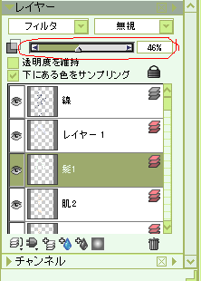
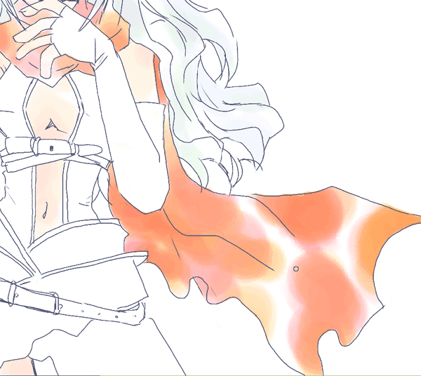
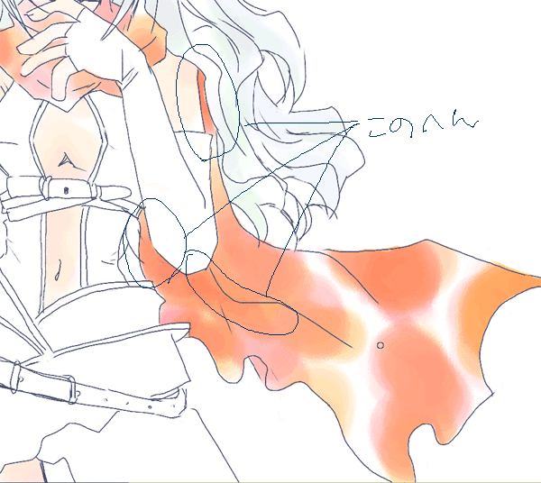
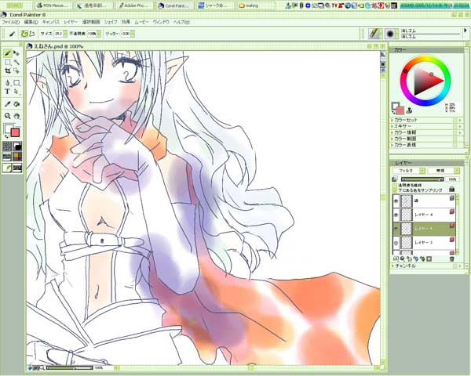
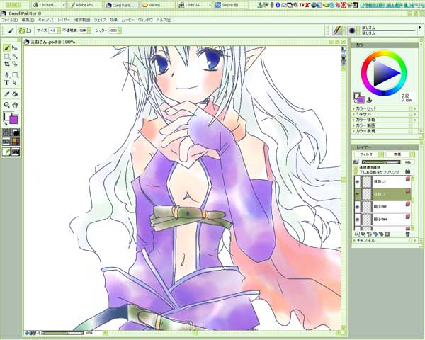

続・色塗りですー。
次は髪の毛です。
モデルのギルメンは銀髪ふわ毛なので、影だけ色を塗ります。
影っぽいところをイメージして、青と緑を別々のレイヤーで塗り塗り。
あー色塗るイメージとしては、円を描くような塗り方といえばいいのかな？
アニメ塗りのような塗り方のペン使いで塗ると、水彩らしさがうまく出ないので、
いろいろな色の円を置いていくような感じです。
それで髪の毛はこうなりましたー。
これは濃さをおとしたところです。

濃さは赤く囲ってあるところで調節です。
基本的に全部薄くします。
どうも、デジタルだと薄くしないと変なんだよなぁ。
次はマントっぽいヤツですー。
赤系なので朱色とオレンジっぽいのを組み合わせます。

こんなかんじです。
暗いところを濃く、明るいところを薄く、全部塗ってしまわないように気をつけます。
光が当たる一番明るい部分は何も塗らないんです。
その次に明るい部分が重ね塗りしている1色が出ていて、その次が重なっていて、という感じです。
ちなみに、光が当たるところを消しゴムで消すと、次の明るいところが変になるので、
消しゴムは基本的にはみ出たところを消すだけに用います。
これだけだと、目がちかちかしてきそうなので(´Д`;)
青を暗いところにいれます。

青を入れるのはあのへん。
もっとも暗いところですね。

こんなかんじですー。
この辺が、デジタルの嫌なところで混ざってくれない(´・ω・`)
レイヤーが別々なのであたりまえなんですが。
あの手この手で誤魔化します。
まず、はみ出たところを消す。
次に、にじませたいところをぼやかしたりして、結局濃さを調節して落ち着きました。
服は紫系なので、紫と赤系を使って色を塗り塗り。
手順は今までと一緒です。

終わりが！ みえて！ きたぞ！
前へ-次へ